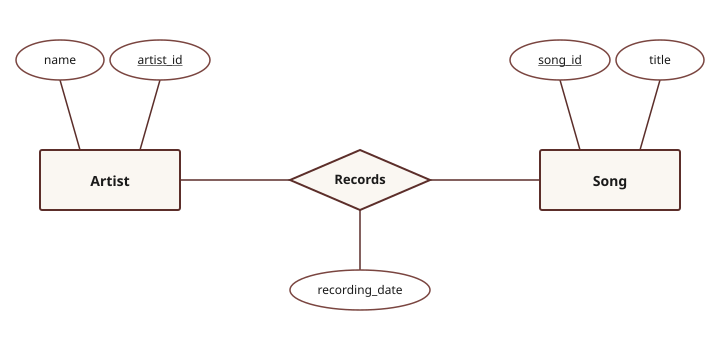
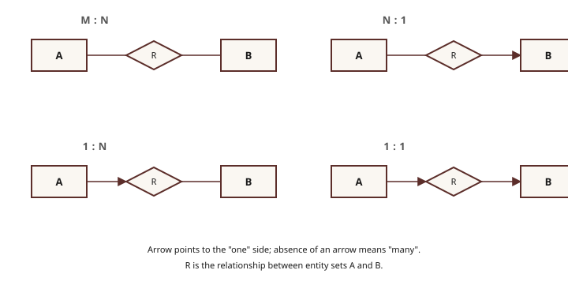

On this page ▾
1. ER Model
| Concept | Symbol | Description |
|---|---|---|
| Entity | Rectangle | A real-world object in the database |
| Entity Set | Rectangle | A collection of similar entities |
| Weak Entity | Rectangle with a bold (double) border | Cannot be identified without an owner entity |
| Attribute | Ellipse | A property of an entity |
| Key Attribute | Ellipse with the label underlined | Uniquely identifies each entity in the set |
| Relationship | Diamond | An association between entities |
Total participation (bold line): every entity in the set must participate in the relationship.
Partial participation (single line): some entities may not.
Primary key: the minimal set of attributes that uniquely identifies a row.
Foreign key: an attribute that references the primary key of another table.


2. ER Model Exercise
Draw an ER diagram for the BU Music Streaming Service.
Entities
- Songs:
song_id(PK),title,genre,duration_sec,release_year - Artists:
artist_id(PK),name,country,debut_year - Users:
user_id(PK),username,age,subscription_type - Playlists:
playlist_id,playlist_name,created_date. Weak Entity, identified by(user_id, playlist_id).
Relationships
- Records. Artist to Song, many-to-many, attribute:
recording_date. - Listens. User to Song, many-to-many, attribute:
listen_timestamp. - Owns. User to Playlist, one-to-many, total participation on Playlist side.
- Contains. Playlist to Song, many-to-many, attribute:
date_added.
3. ER to Schema Translation
Each ER construct maps to SQL using four rules.
Rule 1. Strong entity becomes a table
CREATE TABLE Songs (
song_id INTEGER PRIMARY KEY,
title VARCHAR(200),
genre VARCHAR(50),
duration_sec INTEGER,
release_year INTEGER
);Attributes become columns; the key becomes PRIMARY KEY.
Rule 2. Many-to-many becomes a bridge table
CREATE TABLE Records (
artist_id INTEGER,
song_id INTEGER,
recording_date DATE,
PRIMARY KEY (artist_id, song_id),
FOREIGN KEY (artist_id) REFERENCES Artists(artist_id),
FOREIGN KEY (song_id) REFERENCES Songs(song_id)
);A third table stores the pairs. The composite key (artist_id, song_id) lets a song have multiple artists. Relationship attributes like recording_date live in this bridge table.
Rule 3. Many-to-one becomes a foreign key column
Add a column on the many side that points to the one side. For example, add album_id to Songs.
Rule 4. Total participation becomes NOT NULL
Mark the foreign key NOT NULL so every entity must participate.
4. Relational Algebra
Basic Operators
| Operator | Notation | What it does | SQL equivalent |
|---|---|---|---|
| Selection | σcondition(R) | Filters rows | WHERE |
| Projection | πattrs(R) | Keeps columns; removes duplicates | SELECT DISTINCT |
| Cross-Product | R × S | Every row of R paired with every row of S | FROM R, S |
| Set-Difference | R − S | Rows in R but not in S | EXCEPT |
| Union | R ∪ S | All rows from R and S; removes duplicates | UNION |
Compound Operators
| Operator | Shorthand for | When to use |
|---|---|---|
| Intersection R ∩ S | R − (R − S) | Rows in both |
| Natural Join R ⋈ S | Cross-product + select on shared attrs | Reconnect normalized tables |
| Theta-Join R ⋈c S | σc(R × S) | Join on any condition |
| Division A / B | πx(A) − πx((πx(A) × B) − A) | "For all" queries |
| Rename ρ(New, R) | n/a | Rename table or columns |
Selection never needs duplicate elimination because it only removes rows and cannot make two distinct rows look the same.
Real SQL engines use bags by default, so duplicates survive unless you use DISTINCT explicitly.
5. Relational Algebra Examples
Data
| song_id | title | album | genre |
|---|---|---|---|
| 1 | Make Them Cry | Iceman | Rap |
| 2 | Dust | Iceman | Rap |
| 3 | Ran To Atlanta | Iceman | Rap |
| 4 | National Treasures | Iceman | Rap |
| 5 | What Did I Miss | Iceman | Rap |
| 6 | Rusty Intro | Habibti | RnB |
| 7 | WNBA | Habibti | RnB |
| 8 | Slap The City | Habibti | Afrobeats |
| 9 | High Fives | Habibti | RnB |
| 10 | Classic | Habibti | RnB |
| 11 | Princess | Maid of Honour | Dance |
| 12 | Cheetah Print | Maid of Honour | Dance |
| 13 | Which One | Maid of Honour | Rap |
| 14 | Amazing Shape | Maid of Honour | Dancehall |
| 15 | Road Trips | Maid of Honour | RnB |
| song_id | artist |
|---|---|
| 3 | Future |
| 3 | Molly Santana |
| 9 | Sexyy Red |
| 12 | Sexyy Red |
| 13 | Central Cee |
| 14 | Popcaan |
Questions
Find the titles of all songs on Iceman.
Answer
πtitle(σalbum = 'Iceman'(SONGS))
Find the titles of all RnB songs.
Answer
πtitle(σgenre = 'RnB'(SONGS))
Find the titles of songs that have a featured artist.
Answer
πtitle(SONGS ⋈ FEATURES)
Find the title of the song Central Cee appears on.
Answer
πtitle(σartist = 'Central Cee'(FEATURES) ⋈ SONGS)
Find all artists featured on Iceman or Habibti.
Answer
πartist(FEATURES ⋈ σalbum = 'Iceman'(SONGS))
∪
πartist(FEATURES ⋈ σalbum = 'Habibti'(SONGS))
Find artists featured on both Habibti and Maid of Honour.
Answer
πartist(FEATURES ⋈ σalbum = 'Habibti'(SONGS))
∩
πartist(FEATURES ⋈ σalbum = 'Maid of Honour'(SONGS))
Find titles of songs with no featured artist.
Answer
πtitle(SONGS) − πtitle(SONGS ⋈ FEATURES)
6. RelaX Exercises
Runs in your browser. No account needed.
Setup
Paste into the RelaX Group Editor:
group: CS460 Lab 1
Songs = {
song_id:number, title:string, album:string, genre:string
1, 'Make Them Cry', 'Iceman', 'Rap'
2, 'Dust', 'Iceman', 'Rap'
3, 'Ran To Atlanta', 'Iceman', 'Rap'
4, 'National Treasures', 'Iceman', 'Rap'
5, 'What Did I Miss', 'Iceman', 'Rap'
6, 'Rusty Intro', 'Habibti', 'RnB'
7, 'WNBA', 'Habibti', 'RnB'
8, 'Slap The City', 'Habibti', 'Afrobeats'
9, 'High Fives', 'Habibti', 'RnB'
10, 'Classic', 'Habibti', 'RnB'
11, 'Princess', 'Maid of Honour', 'Dance'
12, 'Cheetah Print', 'Maid of Honour', 'Dance'
13, 'Which One', 'Maid of Honour', 'Rap'
14, 'Amazing Shape', 'Maid of Honour', 'Dancehall'
15, 'Road Trips', 'Maid of Honour', 'RnB'
}
Features = {
song_id:number, artist:string
3, 'Future'
3, 'Molly Santana'
9, 'Sexyy Red'
12, 'Sexyy Red'
13, 'Central Cee'
14, 'Popcaan'
}Syntax reference
| Operation | Syntax |
|---|---|
| Selection | σ genre = 'Rap' (Songs) |
| Projection | π title (Songs) |
| Natural Join | Songs ⋈ Features |
| Cross Product | Songs × Features |
| Union | A ∪ B |
| Set Difference | A except B |
| Rename columns | ρ new1←old1, new2←old2 (Songs) |
| String values | Single quotes: album = 'Iceman' |
Can't type σ or π? Use sigma, pi, join, cross join, union, except as text alternatives.
Queries
π title (σ album = 'Iceman' (Songs))
Verify this matches Q1 from Section 5.
Run π genre (Songs) and count the rows.
π genre (Songs)
15 songs, but only a handful of distinct genres. This is projection's duplicate elimination.
Build the multi-step query for songs with features, one step at a time.
-- Step 1
σ album = 'Habibti' (Songs)
-- Step 2
(σ album = 'Habibti' (Songs)) ⋈ Features
-- Step 3
π artist ((σ album = 'Habibti' (Songs)) ⋈ Features)
Each step is an intermediate result in a query plan. This is what a database engine evaluates when it runs a JOIN.
π title (Songs) except π title (Songs ⋈ Features)
Verify against Q7.
Run both and compare row counts.
Songs × Features
Songs ⋈ Features
15 x 6 = 90 rows vs 6 rows. The 84 extra rows in the cross product are pairings that mean nothing, like Dust paired with Popcaan.
Run each query one at a time. Paste only one expression into the editor before hitting Execute.
-- Step 1: self-join with no renaming
Features ⋈ Features
-- Step 2: rename both columns (renamed copy alone)
ρ song_id2←song_id, artist2←artist (Features)
-- Step 3: rename only one column, then join with the original
Features ⋈ (ρ artist2←artist (Features))
Step 1 gives back the original Features table because joining a table with itself on shared attributes is a no-op. Step 2 just produces the renamed copy with no joining. Step 3 is the useful pattern: keep song_id the same so it joins, but rename artist so each row pairs two artists who appear on the same song. This is how you write queries like "find songs featuring two different artists."